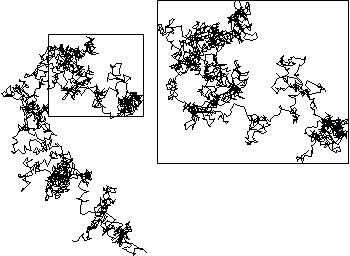

| Pictured here on the left is a portion of the trail left by a particle undergoing Brownian motion in the plane. |
| To emphasize the scaling of Brownian trails, the first quarter of the trail is contained in the box on the left. |
| This box is magnified by a factor of 2 (horizontally and vertically) to give the box on the right, and the first quarter of the left trail is rescaled within this box. |
| (Later parts of the first trail reenter this box, so some of the parts shown on the left box are not shown in the right box.) |
| More detail is revealed in the magnification, and the left side and right side look very similar. |
| Note we have scaled the time by a factor of 4 (first quarter), and space by a factor of 2. We shall see this relation is central to Brownian motion. |
Return to Brownian motion.